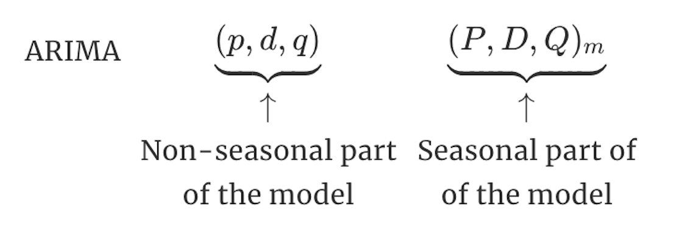
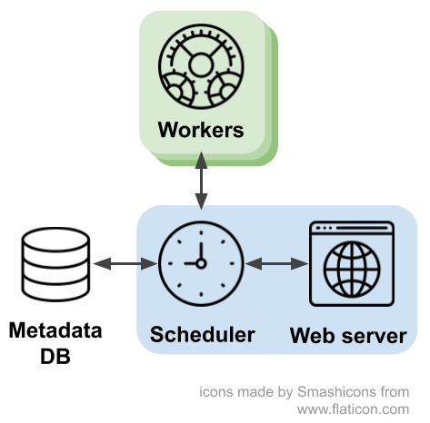

Airflow:
Your Ally for Automating Machine Learning and Data Pipelines
PyConDE & PyData 2019
Berlin, 9-13 Oct 2019
E. Pasqua & B.Uyarer
Who We Are
| Enrica Pasqua @enricapq | Bahadir Uyarer @baadirr |
|
Data Engineer Manager @ Delivery Hero |
Data Scientist @ Delivery Hero |
Download the repo
https://github.com/deliveryhero/
pyconde2019-airflow-ml-workshop
Business Problem
Forecast Daily MIN temperature for Melbourne (AU)
Model
Data
- Min. daily temperatures in Melbourne over 10 years (1981-1990)
- Units are in degrees Celsius
- There are 3650 observations
- Data is credited to the Australian Bureau of Meteorology
Solution

What is Airflow
- Apache open source tool for orchestrating workflows
- Active community: 900+ contributors for a 14k stars repository
- Written in Python for programmatically author, schedule and monitor batch execution of tasks
Why Airflow
- Orchestrate sequences of tasks: when and in which order
- Has friendly and powerful WEB UI (+CLI)
- Handle failures (+alert)
- Manage dependencies
- Monitor performance
- Log tasks in real time
- Scale distribuiting tasks
- Is extensible and customisable
- Design pipelines as code
Airflow Architecture
- Metadata DB → store information 
- Scheduler → schedule jobs
- Worker → execute tasks
- Web Server → Flask app for UI
- All these components can be centralised or distributed
(e.g. Celery, Dask)
Download the repo
https://github.com/deliveryhero/
pyconde2019-airflow-ml-workshop